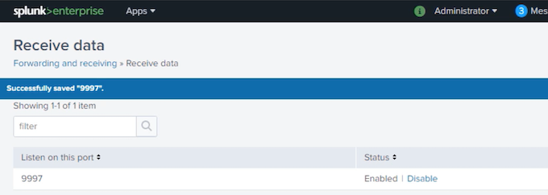

5 Splunk Administration: Monitoring and Creating Inputs
Overview
Introduction to input methods in Splunk
Data pipeline in Splunk
Demo: Setting up the test environment
1 Data Input Methods
File/Dir Monitoring: Continuous monitoring or one-time upload
Network Inputs: Listen on TCP/UDP port
Windows Inputs: Monitor Windows logs locally/remotely
Scripted Input: Local/Remote script output sent to Splunk
HTTP Event Collector: Endpoints to send data to Splunk over http(s)
Data Pipeline in Splunk Enterprise
Demo
Understand topology of test environment
Setup test environment
Configure forwarding and receiving
Install demo app
The Windows machine is named Splunk_Server with a static IP 172.17.11.17.
Installed full Splunk instance on this host.
This host is also my indexer, as well as the search head.
All Windows related inputs will be set up on this host.
It will receive data from Ubuntu host Splunk_HF.
Installed full Splunk instance on Splunk_HF as well and will configure it as a heavy forwarder.
The static IP given to this host is 172.17.11.27.
It will receive data from Splunk_UF and forward it to Splunk_Server.
Splunk_UF on 172.17.11.29 is also an Ubuntu host where I've installed Splunk universal forwarder.
It will be configured to forward data to the heavy forwarder, Splunk_HF.
Lightweight tasks will be performed on this host.
172.17.11.27:8000/en-GB/app/launcher/home

root@splunkuf:~# cd /opt/splunkforwarder/bin/
root@splunkuf:/opt/splunkforwarder/bin#./splunk install app /home/splunk/packages/psdemo01.spl
App '/home/splunk/packages/psdemo01.spl
You need to restart the Splunk Server (splunkd) for your changes to take effect.
root@splunk_uf:/opt/splunkforwarder/bin#
root@splunk_uf:/opt/splunkforwarder/bin# vi/opt/splunkforwarder/etc/system/local/outputs.conf
[tcpout:psdemo_indexers]
server=172.17.11.27:9997
root@splunk_uf:/opt/splunkforwarder/bin# ./splunk list forward-server
Active forward
172.17.11.27:9997
Summary
Input methods in Splunk
Demo: Setting up the test environment
Topology
Configuring forwarding and receiving
Installing the demo app
2 Monitoring Files and Directories
Monitoring files and directories in Splunk
Uploading a file for one shot indexing
Monitoring a log file through Splunk Web
Monitoring files through inputs.conf
Ignoring old files
Using wildcards in monitoring stanza
Blacklisting files
Editing existing monitoring stanza
Monitoring Files and Directories
One-shot indexing used for uploading a file once
While continuously monitoring Splunk remembers the files and follows tail
MonitorNoHandle is Windows only input on files that get locked open for writing
Files and directories can be monitored using Splunk Web, inputs.conf or CLI methods
Monitor stanza for file/directory path
[monitor://<path/to/file/or/directory>]
Use of regex and wildcards
Monitor mounted or shared directories
Can monitor compressed files
.tar, .gz, .bz2, .tgz, .tbz,.zip, .z
Restart Splunk after changes
Monitoring Input Stanza
queue = parsingQueue | indexQueue
Which queue to send events to
parsingQueue
host_regex = <regex>
Regex that extracts host from file name
Setting in “host=”
host_segment = <int>
Segment of monitored path for example a value 4 for /data/logs/mail/server01.log will set host to server01.log
Setting in “host=”
crcSalt = <int>|<SOURCE>
Splunk eads first few lines for CRC check to prevent indexing same files. causes Splunk to add full source path to CRC. Use with caution for rotating files.
ignoreOlderThan= <time_window>
Doesn’t monitor file if update time is greater than number and unit d, h, m or s
0 (disabled)
followTail = 0|1
Equivalent to *nix tail –f. Starts from tail
0 (disabled)
recursive = true|false
If set to false Splunk ignore subdirectories while monitoring a directory
true
/var/log/web/.../access.log
/var/log/web/www1/prod/access.log
/var/log/web/www3/access.log
/var/log/web/www1/access.*
/var/log/web/www1/access.txt
/var/log/web/www1/access.log
/var/log/web(1|2).log
Only web(1|2).log
/var/log/web(1|2)*.log
web1.log, web2test.log, web1server.log
/apache/.../web[A-Z0-9]*.log
/apache/www1/webCprod.log
/apache/www1/test/web5test.log
/apache/www/uat/webJ.log
2-1 Monitoring Files and Directories
Win event logs
Collect locally or remotely using WMI
Performance monitoring
Performance counters in Performance Monitor
Remote monitoring
WMI queries
Registry monitoring
Changes to local Windows Registry
Active Directory monitoring
Changes to Active Directory
2-2 Demo: Monitoring Files and Directories in Splunk Web
By default, Splunk accepts a date 2,000 days ago that is roughly around 5 and a half years. I
n this case, our timestamp is way older than this, so we need to give a much larger number. Largest we can go is 10,951 days.
root@splunk_hf:/opt/splunk/etc/apps/psdemo01/data/apacheweb# cd ../../local
root@splunk_hf:/opt/splunk/etc/apps/psdemo01/local# ll
app.conf
inputs.conf
root@splunk_hf:/opt/splunk/etc/apps/psdemo01/local# vi inputs.conf
3-1 Introduction to Network Inputs in Splunk Enterprise
Network Inputs
TCP/UDP - Accept input on any port
Network Services - Capture data from syslog or netcat
Secure - Accepted from hosts with correct SSL certs
Agentless - No need for UF on the source
Configurations - Splunk web, conf files and CLI commands
Network Inputs
TCP
Connection oriented
Reliable
Flow-control
Packet ordering
Slow
UDP
Connectionless
Unreliable
No flow-control mechanism
No packet ordering ensured
Network Inputs
[protocol://<remote server>:<port>]
host=<string>
source=<string>
queue = parsinqQueue | indexQueue
connection_host = ip | dns | none
_revbuf = <integer> bytes(UDP only)
no_priority_stripping = true | false
no_appending_timestamp = true | false
UP packets and line merging
Universal forwarder as a middle tier for better performance
3-2 Demo: Configuring TCP Input through Splunk Web
I'm going to create a TCP input using Splunk web.
I'll leave it blank means any host is allowed to send the data.
top:test
TCP Network Input
root@splunkuf:~# echo "TCP test message from splunkuf"
| nc -v 172.17.11.27 -t 11601 -wO
Connection to 172.17.11.27 11601 port [tcp/*]
succeeded!
index=main sourcetype=tcp:test
Demo: Configuring UDP Input Using inputs.conf File
Create a UP input using conf files
Test the created input
root@splunk_uf:/# cd /opt/splunkforwarder/etc/apps/psdemo01/local/
root@splunk_uf:/opt/splunkforwarder/etc/apps/psdemo01/local# vi inputs.conf
[udp://115147
connection_host = ip
index = main
sourcetype = udp:test
root@splunk_uf:/opt/splunkforwarder/etc/apps/psdemo01/local# /opt/splunkforwarder/bin/./splunk restart
$ echo "Test data from Splunk UF over UDp" > /dev/udp/1
27.0.0.1/11514
index=main sourcetype=udp:test
4 Getting Windows Data In
Windows event log data
Local and remote data collection
Collecting Windows data on local system
Collecting Windows data remotely
Collecting host data
4-1 Monitoring Windows Data in Splunk Enterprise
Win event logs: Collect locally or remotely using WMI
Performance monitoring: Performance counters in Performance Monitor
Remote monitoring: WMI queries
Registry monitoring: Changes to local Windows Registry
Active Directory monitoring: Changes to Active Directory
Windows Event Logs
Windows Event Log service handles the logging
Microsoft Event Viewer is used to view events
Splunk can monitor local and remote log channels
Splunk must run on Windows as Local System/Domain Admin
Splunk uses WMI to read remote logs
Monitoring Windows System
perfmon:
perfmon type input provides performance metrics from the host for components like CPU, memory, disk, etc.
WinHostMon
WinHostMon stanza helps gathering inventory from a host like specifications of the CPU, disks, running processes, services, etc.
WinRegMon
WinRegMon stanza is created to monitor registry changes on the host. This input is very useful to troubleshoot, as well as auditing purposes.
admon
Admon stanza provides us insight into Active Directory domain or forest‑level changes to the users, computers, and other Active Directory objects.
WinNetMon
WinNetMon stanza provides insight to network activity and help monitoring all transactions on the network like network connections and helps detect anomalies and risks like denial‑of‑service attacks by pinpointing the hosts involved.
WinPrintMon
WinPrintMon stanza gives all statistics about printers and print jobs, helps in auditing the printer subsystem, as well as troubleshooting purposes.
4-2 Demo: Setting-up a Local Event Log Collection
Setup local event log collection
Edit the input
Verify results
index=main sourcetype=WinEventLog:Security
Remote event log collections
> This PC › PSDemo (C:) > Program Files > Splunk > etc › apps › launcher > local
inputs.conf
4-3 Demo: White-listing and Black-listing Windows Events
Blacklisting and whitelisting events
Apply whitelist to security log
Filtering Win Event Logs
Blacklisting
Whitelisting
whitelist, whitelist1… whitelist9
Multiple events
blacklist = 0-2000, 6008
whitelist = 4624,4625
whitelist1 = EventCode=%^462.$% User=%awan%
Blacklisting means to ignore certain set of events and allow all the rest.
Whitelists work in the same way, but allow certain events while blocking everything else.
we have learned how to strip off the unnecessary event codes to reduce the noise and amount of data ingested into Splunk
4-4 Demo: Create a Remote Windows Event Log Collection
Creating remote win event log collection
Test the created input
Monitoring WinEventLogs Remotely
Splunk monitors Windows event logs on remote hosts using WMI
Setup wmi.conf
WMI stanza in wmi.conf
Member of AD Domain
The source machine should be member of same AD domain
Run as Domain Admin
The account Splunk is running as should have domain admin privilege.
Remote event logs input has been created successfully.
This PC › PSDemo (C:) > Program Files > Splunk > etc › apps > search › local
wmi.conf
[WMI:WinRemoteLogs]
disabled = 0
event_log_file = Security
index = default
interval = 5
server = WinRemote
index=main sourcetype="WinEventLog:Security"
Program Files › Splunk › etc › apps › search › local
wmi.conf
[WinHostMon://LocalHostMon]
interval = 3600
type = Processor; Disk
index=main source=LocalHostMon
Monitoring Windows data
Demo: Collecting Windows data locally
Demo: Filtering Windows event log data
Demo: Gathering Windows data remotely
Demo: Monitoring local host data
6 Scripted Inputs
Overview
Scripted inputs in Splunk
Creating input through Splunk web
Creating scripted inputs using inputs.conf
PowerShell Modular inputs
Using Splunk web
Using inputs.conf
Using wrapper scripts
Where to use scripted inputs?
Data is dynamic in nature
Data is on external/remote systems
Need to apply transformations on data before ingesting
Need to authenticate before accessing the data
Scheduled or continuous monitoring of a system
6-1 Scripted Input: Use-Case Scenario
We can use shell scripts, Python scripts, Windows batch files, PowerShell, or any other utility that can format and stream the data that we want to index into Splunk.
It is so powerful that we can virtually do any data acquisition task in Splunk using this feature.
Scripted inputs in Splunk are set up in inputs.conf files using specific stanza
For all those scenarios where we are not able to use simple scripts where we need to send parameters to script or the program running the script is outside of Splunk environment, we can use wrapper scripts.
We can schedule it using standard cron expression or just provide a number of seconds.
If we provide value 0 for the interval, this means that the script will run continuously.
For a value ‑1, it will only run once on startup.
After setting up scripted input stanza in inputs.conf, we can reload scripted inputs explicitly without restarting Splunk, and we can enable or disable our scripts through the stanza attribute disabled, which is set to false or true accordingly.
Scripted inputs are used when the data we are looking at is dynamic in nature, for instance, performance counters like CPU, memory, or disk usage where the data is on external or remote systems, for instance, databases that you send SQL queries through your script and then pass the output and send to Splunk or using the APIs.
Another use case might be where you need to apply transformations before sending data to Splunk. For instance, you have data in CSV format, and for some reason, you need to convert it to JSON format before sending to Splunk.
Also, sometimes we need to authenticate against a system before getting access to data. For instance, your files are in an AWS S3 bucket.
We also use scripts where we want to schedule our inputs, for example, polling a remote logger for current sensor values after 15 minutes for continuously monitoring something for change and sending to Splunk as soon as the condition becomes true.
import cv, json
from os.path import dirname, realpath, join
filePath = join(dirname(dirname(realpath(__file__))), 'data', 'users.csv')
with open (filePath) as usersFile:
CSvReader = cv.DictReader(usersFile)
for row in csvReader:
print(json.dumps(row))
root@splunk_uf:/opt/splunkforwarder/etc/apps/psdemo01/bin# /opt/splunkforwarder/bin/./splunk cmd /opt/splunkforwarder/etc/apps/psdemo01/bin/perfmon.sh
/opt/splunkforwarder/etc/apps/psdemo01/bin/perfmon.sh: line 11: echo1: command not found
root@splunk_uf:/opt/splunkforwarder/etc/apps/psdemo01/bin# cd /opt/splunkforwarder/var/log/splunk/
root@splunk_uf:/opt/splunkforwarder/var/log/splunk# tail -f splunkd.log
index=_internal host=splunk_uf error perfmon.sh
Demo: Creating PowerShell Modular Input in Splunk Web
root@splunk_hf:~# cd /opt/splunk/etc/apps/psdemo01/local/
root@splunk_hf:/opt/splunk/etc/apps/psdemo01/local# ll
app.conf
inputs.conf
vi inputs.conf
[default]
host = splunk_uf
[http://PSDemo Users Test]
disabled = 0
host = splunk_hf
index = main
indexes = history,main
source = hec_test_users
sourcetype = json_no_timestamp
token = a94a5897-2666-485c-a62f-Odc070463ef1
useACK = 0
4-3 Demo: Sending Events through HEC Using a Script
Send users data to Splunk using HEC token
Setup and run the Python Script
Verify results
Scripted Input: Use-Case Scenario
cd /opt/splunkforwarder/etc/apps/psdemo01/bin/# ll
...
sendUsersUsingHEC.pV
...
import cv, json, requests, urllib3
from os.path import dirname, realpath, join
#Disable certs warning
urllib3.disable_warnings(urllib3.exceptions. InsecureRequestwarning)
FilePath = join(dirname (dirname(realpath(__file__))), 'data', 'users.csv')
#Add the HEC token that you want to send the data through
authToken="a94a5897-2666-485c-a62f-0dc070463ef1"
#IP or name of the host HEC token is set on
splunkHost= "172.17.11.27"
#Port set for HEC communication. Defaults to 8088
hecPort = "8080"
#Prepart the URL the URL
url = "https://"+splunkHost+":"+hecPort+"/services/collector/event"
#Prepare the header with the HEC token
authHeader = {'Authorization' : 'Splunk '+authToken}
#Read the users from file and loop through each record
with open (filePath) as usersfile:
csvReader = cv.DictReader(usersFile)
for row in csvReader:
# Initialise and update current record to send through HEC
record = {}
record.update({'source': 'hec_test'})
record.update({'sourcetype': 'json_no_timestamp'})
record.update({event': (json.dumps(row))})
# Send the record
r = requests.post(url, headers=authHeader, json-record, verify=False)
python3 sendUsersUsingHEC.py
New search: index=main source="hec_test"
Demo: Enabling Indexer Acknowledgement for Reliable Data Ingestion
5-1 Event Parsing and Default Field Extraction in Splunk Enterprise
Parsing phase Event
Event boundaries
Add index-time fields
Default fields
Custom fields
Search time field extractions are performed after the data is indexed
For example, we want to assign a field a certain value based on other field value and make it part of the event.
We can also perform search time field extractions, but the difference is that the search time field extractions don't become permanently part of the event.
Default field extractions
The default fields extracted are tagged to each event before it is indexed and written to the disk.
Tagged with each event Three types
Internal fields
The internal fields contain information that Splunk software uses for internal purposes. These fields start with an underscore. Most common ones are _raw, _time, and _index time, and the default datetime fields are basically different granular representation of the timestamp like date_hour, date_minute, or date_month, etc.
Default datetime fields
Basic default fields
The basic default fields provide basic information about an event such as where it originated, what type of data it contains, what index it is located in, etc.
Common basic fields are host, source, sourcetype, index, line count, and timestamp.
Default-field overriding
Applied to a set of events Transforms applied
props.conf
transforms.conf
REGEX
FORMAT
DEST_KEY
Capturing group regex from the event data or static string can be provided
5-2 Demo: Overriding a Default Field
Override source value in a monitor input
props.conf
transforms.conf
Test the results
root@splunk_hf:/opt/splunk/etc/apps/psdemo01/local# ll
app.conf
inputs.conf
# vi inputs.conf